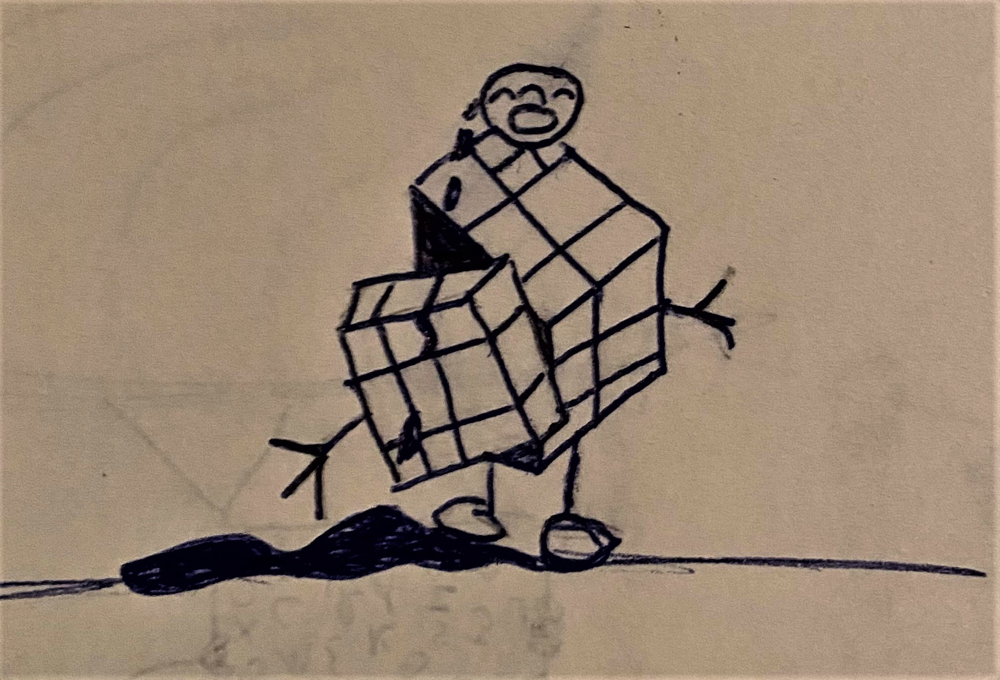
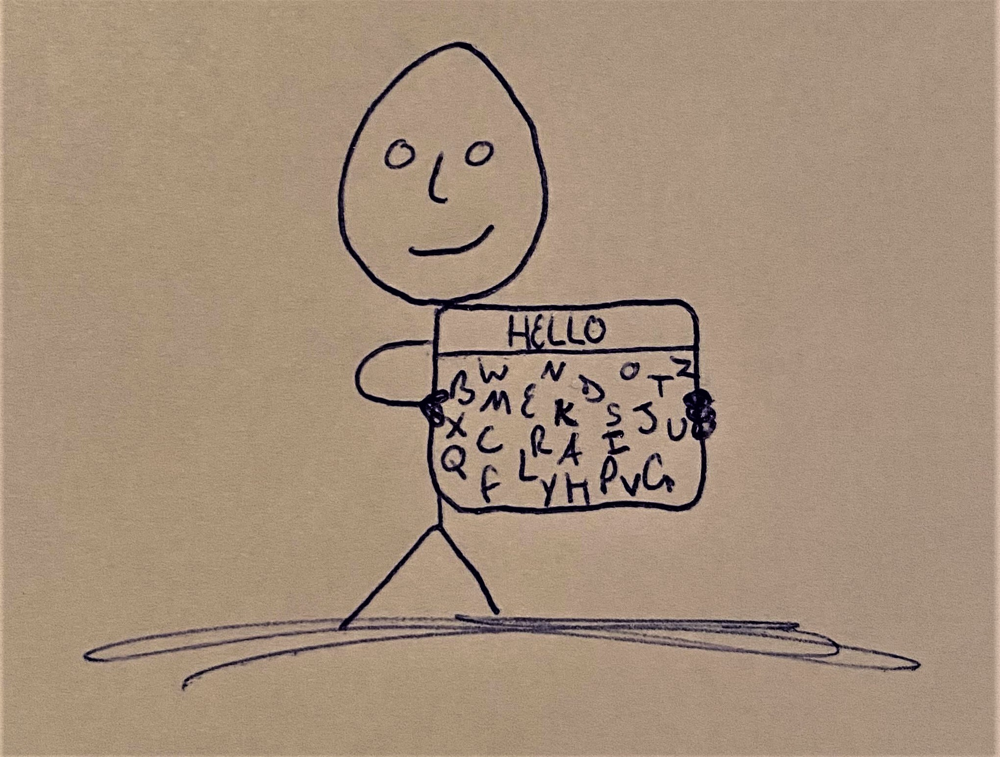

Unfortunately, personality tests have been proven to not be statistically relevant. In fact, the only statistically relevant test available in 2020 which can lend itself to gaging life "placement" is an IQ test. All other tests have been proven to not provide reliable results.
There are times in life that are hard. There are time in life where you may feel like a spinning Rubik’s Cube with a perpetual, Who am I, running in your head. That's good. At least you are taking stock of where you are at. Life goes on and people change and evolve. The reason that you may not know who you are right now is because you are in the process of becoming someone new. Most people grow to an age where they understand the baggage that they may carry from their childhood or past. Yet, only a few people live to the age of comprehension that once you are an adult you get to decide which of that baggage you continue to carry with you. You're doing great. You are enough. You can be whoever you are willing to work to be. Do you Boo Boo and have a great rest of your time at OSU.
Below you can choose to download a PDF of some inspirational quotes about being YOU and living life. There is also a link to an NPR article regarding personality tests. Best wishes. NPR on personality tests